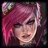
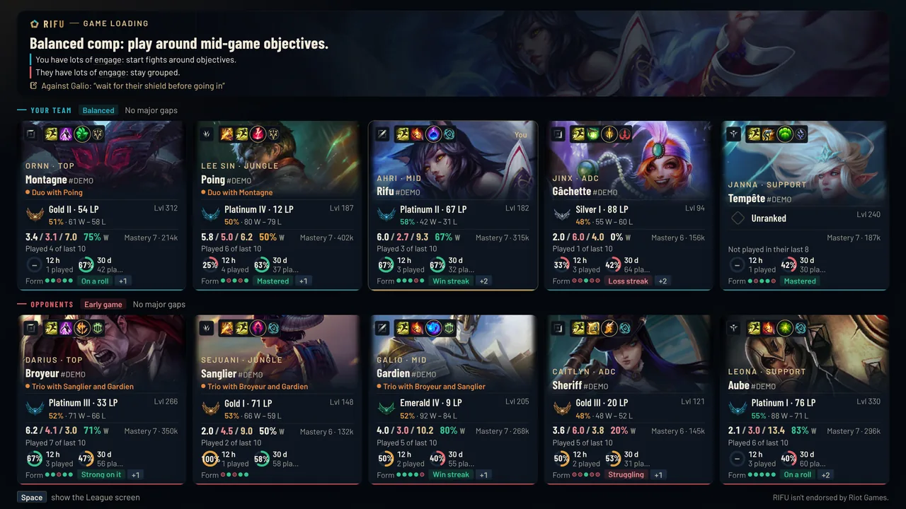
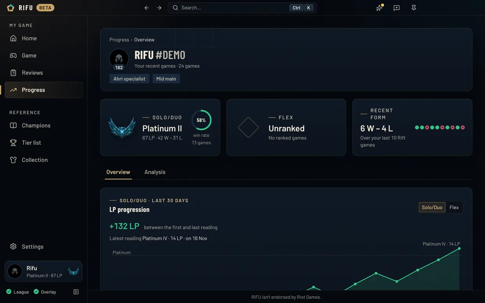
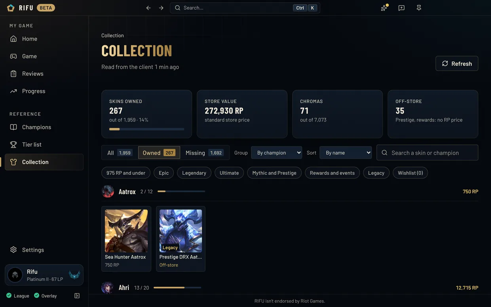

Invite-only beta · code on Discord
The missing piece of your comp. RIFU, the free League of Legends companion app for Windows
In champ select, RIFU reads your comp and suggests three champions from your pool, each with its reason. Then it follows you on the loading screen, in game and all the way to a post-game score out of 100.
- Free, no subscription
- Official Riot APIs
- No Overwolf to install
Playable demo · you are mid
Draft starting… DariusTop
DariusTop Lee SinJungle
Lee SinJungle ?YouMid
?YouMid JinxADC
JinxADC ThreshSupport
ThreshSupport
 GarenTop
GarenTop
ViJungle ZedMid
ZedMid CaitlynADC
CaitlynADC LeonaSupport
LeonaSupport
Illustrative demo. In the app, the analysis relies on data for all 173 champions, your games and patch statistics.
From champ select to review, it changes screens with League
You don't open anything: RIFU follows the game and shows the right screen at the right time. Four moments, one companion.
-
1Champion select
Your options, each with its reason
RIFU follows the draft live and tells you what each champion in your pool brings that the others don't. You keep the final say.
- Three options from your pool, no imposed ranking
- Type any champion: RIFU rates it next to the others
- Champion locked: runes, spells and items with “Import all”

-
2Loading screen
All ten players, before the Rift
A full screen over League's loading screen, with the game plan on top. You know who you're facing before the first second.
- Team game plan and your matchup memo
- Premades spelled out: “Duo with Poing”
- Rank, mastery, form over 12 h and 30 days, tags

-
3In game
Overlays that help, without playing for you
A compact HUD that lets your clicks through, the Ctrl + X panel and item gaps on TAB. Three presets: Minimal, Standard, Full.
- Next buy adapted to the enemy comp
- One row per lane, each player facing their opponent
- Dragon and Baron timers on the minimap

-
4Post-game review
A score out of 100, and what explains it
Every stat is compared with the best of the ten players, weighted for your role. A support is judged on vision, not minions.
- Score weighted by role, MVP and LP won or lost
- What worked, what didn't, with numbers
- The moment the game turned, and your lane duel


The mistake that keeps coming back becomes your priority
RIFU reviews every game and remembers what keeps happening. You work on one thing at a time, and you see when it's fixed. Always compared with your own level, never with anyone else's.
A mistake that repeats
Farming that drops after laning, a lead thrown away, too much time dead: the review flags it when it comes back from one game to the next.
A goal, chosen by you
RIFU suggests the matching goal, for example “1 death at most before 15 min”. You take it, or none.
One mistake fewer
When you stop making it, it shows as “fixed”. Your strengths are tracked the same way.
- Your week
- A summary of the past week on the home screen, from 5 games.
- Per-champion review
- Average score, recurring mistake and strength, from 3 reviewed games.
- Wins versus losses
- What changes between the two, in your most played role.
- Progress by axis
- Farming, fighting, vision, survival and objectives, with your 30-day LP.


Rift, ARAM, Mayhem: the advice follows the mode
In ARAM, roles stop mattering: the bench and what the team lacks do. You can turn overlays off mode by mode.
Ranked, normals, Co-op vs AI and custom games
- Options from your pool based on the comp's gaps
- Full loading screen, overlays and review
- Suggested bans and an “us vs. them” comp, axis by axis
ARAM and ARAM Mayhem
- What your team lacks: tank, engage, poke, healing
- Your champion compared with the bench and your cards
- Mode-specific builds, runes and spells
- In Mayhem, the augments most picked with your champion
Augment tiers show how often an augment is picked, never how much it wins.
Two champions per game
- Builds for both your champions side by side, from the lobby
- Overlays and review just like in ranked
- Match history filtered by mode
Everything else, in the same app
What used to take several tools, one of them paid, RIFU brings together in one place.

Tier list by role
Top-three podium, S+ to D tiers and a “My pool” filter, computed by RIFU from EUW Emerald+ ranked games.


Skin collection
Completion, store value in RP and chromas. It stays on your PC.
- One-click runes and items
- Rune page, spells on the right key and item set, together or separately.
- Draft simulator
- Test a comp outside a game and see what your pool doesn't cover.
- Matchup memo
- A memo against each opponent, recalled at the next draft and loading screen.
- LP tracking
- Today's LP on the home screen, a 30-day curve, even for games played with RIFU closed.
- Player profiles
- Ranks, tags and champions of any EUW player, every game scored out of 100.
- This patch for you
- A Buff, Nerf or Adjusted chip next to your champions and items.
- Champion pages
- Build, runes, abilities and matchups, with your own record on the champion.
- Overlays your way
- Opacity from 30 to 100%, size from 80 to 130%. Text stays readable.
- Always on patch
- Items, runes and abilities updated every patch, with no new version.
- Match found
- Sound alert, and auto-accept if you turn it on.
- Daily challenge
- Three League trivia questions, the same for everyone.
- Every feature in detail
- Every screen, every overlay, every setting.
Helping you play, never playing for you
Official APIs only
RIFU never reads the game's memory, and only touches League's files to enable replays, when you ask.
Always several options
Never “play X”. Suggestions come from your pool, not from a single meta.
No hidden advantage
No MMR estimate, no unmasking of hidden players, no tracking of enemy summoner spells.
Your data stays with you
Match history, memos and settings stay on your PC. Your feedback is only sent with your consent.
What others charge for, RIFU gives you
The best of Porofessor and DPM, in a single free app.
| Feature | PorofessorWindows app | DPMWindows app | |
|---|---|---|---|
| App price | Free | Free with ads | Premium, from €3.33/month |
| Draft advice based on your comp's gaps, from your pool | Inclus | Non | Premium |
| Rune, spell and build import | Inclus | Inclus | Premium |
| Player tags on the loading screen (streaks, one-tricks…) | Inclus | Inclus | Non |
| Gold gap and suggested build in game | Inclus | Inclus | Premium |
| LP tracking | Inclus | Non | Premium |
| Detailed post-game analysis | Inclus | Inclus | Premium |
| Skin collection and RP value | Inclus | Non | Premium |
Based on the public offers of Porofessor and DPM's Windows app (Premium subscription only, €4.99/month or €39.99/year) as of October 2026; they may have changed since. Porofessor and DPM are trademarks of their respective owners. RIFU is not affiliated with either.
Frequently asked questions
Another question? The RIFU Discord answers, usually within the day.
Is RIFU free?
Yes, completely. In the long run, RIFU will be funded by discreet ads, only inside the RIFU window and outside games: never in champ select, on the loading screen, in game or in an overlay.
Does RIFU replace Porofessor or DPM?
That's the goal. RIFU brings loading screen scouting, a draft assistant, in-game overlays, a post-game breakdown and LP tracking into one app, with no subscription. Its strength: it explains what your comp is missing and suggests champions from your own pool.
Is the app available in English?
Yes. The app is fully available in English and French. It follows your Windows language, and you can switch it in Settings › Language.
Is my account at risk?
RIFU only uses the interfaces Riot provides to third-party apps: the Riot API, the League client API and the live game data. It never reads the game's memory, only touches League's files to enable replays if you ask, and never plays for you.
It follows Riot's rules for third-party apps: several options rather than a forced pick, no MMR estimate, no unmasking of hidden players in champ select, no tracking of enemy summoner spells or ultimates.
How do I get a beta code?
The beta is closed and invite-only, with one personal code per player. Join the RIFU Discord to ask for a spot.
How is the score out of 100 calculated?
Each stat of the game (kills, kill participation, damage, gold, minions, vision, objectives) is compared with the best of the ten players, then weighted by your role. The best player on the winning team is MVP; the review also names the best player on the other team. It's neither a rank nor an MMR estimate.
Do the overlays get in the way?
No. They never take focus from the game, the HUD lets your clicks through, and you set their opacity (30 to 100%) and size. During the beta they need borderless mode; fullscreen will come with the signed version.
Do I need to install Overwolf?
No. RIFU is a standalone app: it doesn't need the Overwolf client.
Does RIFU work on Mac or mobile?
No. RIFU is an app for Windows 10 and 11, where League of Legends is played. From your phone, you can already request your beta code on Discord and send yourself the download link for your PC.
Why does Windows show a warning?
During the beta the installer isn't signed with a certificate yet, so Windows SmartScreen flags it. Signing is planned for the public release. Until then, only download RIFU from this site or the official releases page.
Which modes, servers and systems?
Summoner's Rift (normals, ranked, Co-op vs AI, custom games), Swiftplay, ARAM and ARAM Mayhem. In Arena, RIFU gives no draft advice, and Brawl games aren't tracked. EUW server, on Windows 10 and 11.
What data is sent?
The minimum needed to show profiles and the loading screen. Everything else stays on your PC, and feedback is only sent if you turn it on. Details are in the privacy policy.
Ready for your next game?
Three steps, two minutes. Free, for Windows 10 and 11.
- Install RIFU The latest installer, with automatic updates after that. Download for Windows
- Request your beta code A personal code, on the community's Discord. Join the Discord
- Launch League RIFU detects your account and pool on its own. For the overlays, switch to borderless windowed.